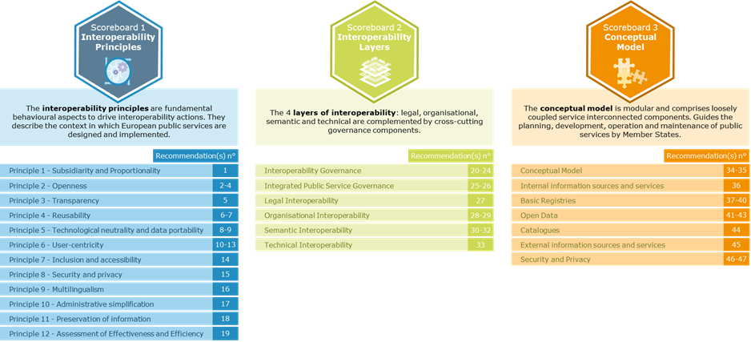

Digital Public Administration factsheet 2021
Spain
Table of Contents
Digital Public Administration factsheet 2022
2 Digital Public Administration Highlights 9
3 Digital Public Administration Political Communications 12
4 Digital Public Administration Legislation 20
5 Digital Public Administration Governance 30
6 Digital Public Administration Infrastructure 36
7 Cross-border Digital Public Administration Services for Citizens and Businesses 47
Country
Profile
1
Country Profile
Digital Public Administration Indicators
The following graphs present data for the latest Digital Public Administration Indicators for Spain compared to the EU average. Statistical indicators in this section reflect those of Eurostat at the time the Edition is being prepared.
Percentage of individuals using the internet for interacting with public authorities in Spain | Percentage of individuals using the internet for obtaining information from public authorities in Spain | ||
Percentage of individuals using the internet for downloading official forms from public authorities in Spain | Percentage of individuals using the internet for submitting completed forms to public authorities in Spain | ||
Interoperability State of Play
In 2017, the European Commission published the European Interoperability Framework (EIF) to give specific guidance on how to set up interoperable digital public services through a set of 47 recommendations. The picture below represents the three pillars of the EIF around which the EIF Monitoring Mechanism was built to evaluate the level of implementation of the EIF within the Member States. It is based on a set of 71 Key Performance Indicators (KPIs) clustered within the three main pillars of the EIF (Principles, Layers and Conceptual model), outlined below.

Source: European Interoperability Framework Monitoring Mechanism 2021
Source: European Interoperability Framework Monitoring Mechanism 2021
Source: European Interoperability Framework Monitoring Mechanism 2021
Source: European Interoperability Framework Monitoring Mechanism 2021
eGovernment State of Play
The graph below presents the main highlights of the latest eGovernment Benchmark Report, an assessment of eGovernment services in 36 countries: the 27 European Union Member States, as well as Iceland, Norway, Montenegro, the Republic of Serbia, Switzerland, Turkey, Albania and Macedonia (referred to as the EU27+).
The study evaluates online public services on four dimensions:
- User centricity: indicates the extent to which a service is provided online, its mobile friendliness and its usability (in terms of available online support and feedback mechanisms).
- Transparency: indicates the extent to which governments are transparent about (i) the process of service delivery, (ii) policy making and digital service design processes and (iii) the personal data processed in public services.
- Cross-border services: indicates the extent to which users of public services from another European country can use the online services.
- Key enablers: indicates the extent to which technical and organizational pre-conditions for eGovernment service provision are in place, such as electronic identification and authentic sources.
The 2022 report presents the biennial results, achieved over the past two years of measurement of all nine life events used to measure the above-mentioned key dimensions. More specifically, these life events are divided between seven ‘Citizen life events’ (Starting a small claim procedure, Moving, Owning a car, Health measured in 2021, and Career, Studying, Family life, measured in 2020) and two ‘Business life events’ (Regular Business Operations, measured in 2021, and Business start-up, measured in 2020).

Source: eGovernment Benchmark Report 2022 Country Factsheets

Digital Public Administration Highlights
2
Digital Public Administration Highlights
| Digital Public Administration Political Communications |

Digital Public Administration Legislation |
At the end of 2021, three important orders on representation and empowerment were published:
- Orden PCM/1384/2021, of December 9, which regulates the Electronic Registry of powers of attorney in the scope of the General State Administration. This register makes it easier for another person to carry out procedures on behalf of the interested party, after completing an electronic power of attorney.
- Orden PCM/1383/2021, of December 9, which regulates the Register of Authorized civil servants in the field of the General State Administration. This law allows people who, for any reason, cannot access the services of the Public Administration electronically, do so with the same rights and guarantees, with the help of a civil servant.
- Orden PCM/1382/2021, of December 9, which regulates the General Electronic Registry within the scope of the General State Administration.
| Digital Public Administration Governance |

In accordance with the provisions of article 91 of Law 40/2015, of 1 October 2015, on the Legal Regime of the Public Sector, the creation of the State Digital Administration Agency has been authorised as a public body with public legal personality and assets own and full capacity to act. The creation of the agency will mean that there will have to be changes in the governance of the digital administration in the future.
| Digital Public Administration Infrastructure |

The Secretariat-General for Digital Administration will soon have an automation system that will be available to all state agencies. It will be a Robotic Process Automation (PRA) platform based on robotic technology designed to help administration agencies become a fully automated digital administration.

Digital Public Administration Political Communications
3
Digital Public Administration Political Communications
Specific Political Communications on Digital Public Administration
- Ensure that the digital connectivity reaches all citizens. This implies reducing the digital gap between rural and urban areas;
- Continue with the deployment of 5G technology by promoting its positive effects on economic growth, social progress and territorial connectivity;
- Foster the digital skills of workers and citizens;
- Reinforce the Spanish cybersecurity landscape;
- Boost the digitisation of public administrations;
- Advance businesses’ digital transitions, specifically the start-ups and small-medium enterprises;
- Accelerate the overall growth through the digitisation of key sectors;
- Improve the attractiveness of Spain’s business, work and investment landscape in the audio-visual field;
- Ease the transformation towards a data-based economy (artificial intelligence or AI and big data), while protecting security and privacy; and
- Ensure citizen’s rights in the new digital era.
Public Administrations Digitisation Plan 2021–2025
In addition to general actions covering all ministries, the digitisation programme will address specific sectors including health, justice, employment policy, diplomatic services and social integration. Among the different measures, for instance, the plan foresees the reinforcement of data interoperability in the health sector.
The plan will be structured around three lines of action:
- Digitally transforming the administration with horizontal initiatives for the deployment of efficient, safe and easy-to-use public services and for a generalised access to emerging technologies;
- Deploying leading digitisation projects, e.g. in the areas of health, justice or employment; and
- Supporting the digitisation of territorial administrations, Autonomous Communities and local entities.
Some of the plan’s key measures are:
- App Factory: this initiative will enhance mobile application development in the public sector;
- One-click Administration: this initiative will facilitate and improve access to citizens and businesses to public information and digital services; and
- GobTechLab: this programme will create an innovation lab within the government public administration in order to promote co-creation and innovation in public services.
Berlin Declaration on Digital Society and Value-Based Digital Government
Interoperability
No political communication has been adopted in this field to date.
Key enablers
Access to Public Information
Fourth National Action Plan for Open Government
The Fourth National Action Plan for Open Government 2020–2024 was approved on 29 October 2020. It includes ten commitments taken on by public administrations to reinforce transparency and accountability, improve participation, establish systems of public integrity, and train citizens and public employees and raise their awareness on matters related to open government, with the aim to contribute to a more just, peaceful and inclusive society.
The general objectives of the Fourth National Action Plan are the following:
- Promoting and facilitating citizens’ involvement in the decision-making process of public administration bodies;
- Improving the transparency, quality and availability of open data as mechanisms of accountability in public administration activity;
- Developing a public integrity system that promotes ethical values, reinforces good public governance practices, and raises the confidence of citizens in public administration; and
- Making citizens and public servants aware of the value of open government.
eID and Trust Services
Public Administration Digitisation Plan 2021–2025
The previous Digital Transformation Plan for the General Administration and its Public Agencies (ICT Strategy 2015–2020) stated that all digital services of the central State administration must have a common eIdentification system through shared keys. The Cl@ve system was approved by the agreement of the Council of Ministers at its meeting on 19 September 2014.
Following this line of action, the Spanish government incorporated Cl@ve in all digital services that require eIdentification. Additionally, it has been expanded to all administrative levels and can be used by any interested public administration body.
Furthermore, Cl@ve allows for people’s identification with their National Identity Document (DNI and other eCertificates) and offers the possibility of signing in the cloud with personal certificates held on remote servers. Cl@ve is also integrated into eIDAS, the electronic identities cross-border recognition system, thus providing other EU countries’ identification mechanisms. Cl@ve and certificates in general will evolve in order to ensure cross-border use and improve both interoperability and reuse at all administrative levels.
Moreover, one of the measures included in this new plan for the digitisation of the public sector a new model of eID, providing citizens and businesses with an easier access to digital identification means. A simple and safe way to control how much information you want to share with services that require sharing of information. We will study a solution operated through digital wallets available in mobile phone applications and other devices.
As a result, as of January 2022, 6 599 organisms had adopted Cl@ve.
Security Aspects
National Cybersecurity Strategy
In 2019, the National Security Council approved a new National Cybersecurity Strategy that further expanded the National Security Strategy 2017. The 2019 strategy takes into consideration technological changes and includes provisions for the creation of a National Cybersecurity Forum to foster the collaboration between public and private entities.
- Security and resilience of public sector networks, information and communication systems and essential services;
- Secure and reliable use of cyberspace to ward off illicit or malicious use;
- Protecting the business and social ecosystem and citizens;
- Culture and commitment to cybersecurity, strengthening human and technological skills; and
- International cyberspace security.
Moreover, the government approved the creation of the Security Operations Centre (SOC) for the central administration. The commissioning of this service is strategic to provide the General State Administration with capabilities for prevention, detection and response against cyberattacks.
In addition, to improve the security of local entities against configuration failures and incidents, the National Cryptologic Centre is working on the implementation of Virtual Security Operation Centres (vSOC).
Digital Rights Charter
The objective of the charter is descriptive, prospective and assertive. Descriptive of digital contexts and scenarios that give rise to new conflicts and situations that need to be resolved; prospective by anticipating future scenarios that can already be predicted; and assertive because it revalidates and legitimises the principles, techniques and policies that should be applied in present and future digital environments and spaces.
The Digital Rights Charter also aims to strengthen citizens' rights, create certainty for society in the new digital age and increase people's confidence in the changes and disruptions brought about by new technologies.
Interconnection of Base Registries
Digital Transformation Plan for the General Administration
Measure 10 of the contemplates reinforcing the National Health System through interoperability, facilitating the management of information from the different Autonomous Communities to improve the service, applying artificial intelligence to data analysis and facing emergencies. Interoperability is one of the priorities in the health field to facilitate collaboration and establishing the ensuing organisational, technical and semantic coordination mechanisms.
eProcurement
General State Administration Plan for Green Public Procurement
The Spanish government adopted the General State Administration Plan for Green Public Procurement. The Plan was approved by Order of Presidency PCI/86/2019 of 31 January 2019.
The plan responded to the need to incorporate environmental criteria in public procurement, so that public administration bodies can carry out their activities and contribute to the economic and environmental sustainability objectives.
The main objectives of the plan are: (i) promoting the acquisition by the public administration of goods, works and services with the least environmental impact; (ii) serving as an instrument to promote the Spanish Circular Economy Strategy; (iii) guaranteeing a more rational and economic use of public funds; (iv) promoting environmental clauses in public procurement; and (v) publicising the possibilities offered by the legal framework of green public procurement.
Domain-Specific Political Communications
Public Administration Digitisation Plan 2021–2025
Presented on 28 January 2021, the goal of the Public Administration Digitisation Plan is to improve public administration accessibility for citizens and businesses, while guaranteeing strong data protection.
SMEs Digitisation Plan 2021–2025
National Plan for Digital Skills
Emerging Technologies
Artificial Intelligence (AI)
Artificial Intelligence National Strategy
In December 2020, the Spanish government presented the Artificial Intelligence National Strategy for the period of 2021–2023. The objective of the strategy is to set a level-playing field for businesses and citizens that guarantees security and privacy.
The AI Strategy is part of the Recovery, Transformation and Resilience Plan for the Spanish economy, offering a framework for the development of AI in the country which aims to improve market competitiveness and growth.
The strategy is launched with an investment of EUR 600 million in combination with the private-public cooperation Next Tech.
The plan is developed around six axes:
- The push for scientific investments, technological development, and AI innovation;
- The promotion of digital skills, national talent, and international attractiveness;
- The development of data platform and technological infrastructure that enable AI;
- AI integration in the value chain in order to foster economic growth;
- The promotion of AI use in public administrations; and
- The establishment of an ethical framework that guarantees and protects citizens' rights and social welfare.
The strategy includes a total of 30 measures to ensure that these goals are achieved.
RDI Strategy in Artificial Intelligence
On 2 December 2020, the Ministry of Science and Innovation released the RDI Strategy in Artificial Intelligence which establishes a series of priorities under the new Spanish Strategy for Science, Technology and Innovation (EECTI) 2021-2028. These priorities will lead to initiatives and activities defined and financed through the Science, Technology and Innovation Stares Plans (PECTI), mobilising the synergies between the different levels of public administration and through the co-development of the public and private sectors. This is a condition for the development of AI technologies and applications linked to this Strategy to avoid negative bias and prejudices, relating, among others, to gender, race or other forms of discrimination, and of which the decision-making systems of AI should be free.
Distributed ledger technologies
Participation in the European Blockchain Service Infrastructure
The third measure of the Public Sector Digitisation Plan 2020–2025 sets out as an objective the creation of personalised and innovative public services that can be framed within European actions, participating with the Member States of the European Union in projects such as the European Blockchain Services Infrastructure (EBSI, a blockchain network that will make it possible to provide public services throughout the European Union in a secure way), or proposals related to data and AI. As part of the GobTechLab foreseen in measure No. 3, a blockchain sandbox will be made available to administrations to work on testing this technology. Said sandbox will be presented in March.
- Storing and exchanging the information provided by trusted public or private sources
- Citizens control their data
Moreover, on 13 November the Spanish government has approved Law No. 7/2020 for the digital transformation of the financial sector. This law foresees the creation of a regulatory and supervisory sandbox. The Ministry of Economic Affairs and Digital Transformation has received a total of 67 applications in the first call for access to the sandbox provided for in Law No. 7/2020 for the digital transformation of the financial system. Currently two solutions have completed all tests, one of them regarding sovereign identity in the private sector.
As to regional administration, the government of Aragon, a pioneer in the implementation of blockchain bidding, has demonstrated the effectiveness of this use case.
Big data
No political communication has been adopted in this field to date.
Cloud computing
No political communication has been adopted in this field to date.
Internet of Things (IoT)
IoT Security Guide for Companies
In May 2020, the Spanish National Cybersecurity Institute published the IoT Security Guide for Companies, which details the following topics:
- IoT devices privacy and security threats;
- Security vulnerabilities of IoT device;
- Security measures aimed to protect IoT devices; and
- Safety recommendations that should be applied before employing IoT devices in organisations.
High-performance computing
No political communication has been adopted in this field to date.
High-speed broadband connectivity
Plan for Connectivity and Digital Infrastructures and Strategy to Promote 5G Technology

Digital Public Administration Legislation
4
Digital Public Administration Legislation
Specific Legislation on Digital Public Administration
Compendium of eGovernment Laws
Spain has a continuously evolving legal framework that deals with all necessary aspects for the deployment of digital administration.
The Compendium of eGovernment Laws includes the basic legislation for digital administration, together with other related issues such as eGovernment (common administrative procedure, legal system, national security, and interoperability frameworks), electronic identification, electronic signature and representation, electronic official registries, electronic notification, electronic archiving, technical standards for interoperability, technical instructions for security, data intermediation system, procurement and use of electronic means, electronic invoicing, social security, transparency and access to public information, re-use of public sector information, digital communication, official gazette, accessibility, data protection, electronic judicial administration.
Law on Public Administration Common Administrative Procedure and Law on the Legal Regime for the Public Sector
Government organisations continued to develop in compliance with Law No. 39/2015 of 1 October 2015 on the Public Administration Common Administrative Procedure, and Law No. 40/2015 of 1 October 2015 on the Legal Regime for the Public Sector. These laws were published with the goal of reforming the functioning of the government and implementing a fully electronic, interconnected, transparent administration with a clear and simple structure.
Royal Decree-Law No. 14/2019 of 31 October Adopting Urgent Public Security Measures in Digital Administration, Public sector Procurement and Telecommunications
The Council of Ministers of 31 October 2019 approved Royal Decree-Law No. 14/2019 under which urgent measures were taken, for security reasons, in terms of digital administration, public sector contracting and telecommunications.
Royal Decree No. 203/2021 on the Regulation of Action and Operation of the Public Sector by Electronic Means
Royal Decree No. 203/2021, which was published on 31 March 2021 in the Official State Gazette, approves the Regulation of action and operation of the public sector by electronic means. The approved Royal Decree pursues four main objectives: improving administrative efficiency, increasing transparency and participation, guaranteeing easily usable digital services and improving legal certainty.
The first objective is to guarantee that the administration offers electronic administrative procedures and that citizens can interact by electronic means. The second objective is to develop the electronic General Access Point (PAGe) and the Citizen Folder in the State Public Sector. The third objective is to make the electronic channel user-friendly and effective. And finally, it aims to improve legal security.
Establishment of Electronic Relationships in Administrative Procedures
On 4 September 2018, Royal Decree-Law No. 11/2018 was published in the Official Gazette as an amendment to several laws. The adaptation of administrative procedures to the new paradigm and the design of optimal management processes are required for technological, organisational, and legal developments to meet the necessary degree of maturity. Hence, the amendment was delayed until 2 October 2020 before the entry into force of some of the articles of Law No. 39/2015.
Law on Electronic Trust Services
On 11 November 2020, Law No. 6/2020 on Electronic Trust Services was published in the Official Gazette. The objective of this law is to complement the eIDAS Regulation (Regulation (EU) No. 910/2014 of the European Parliament and of the Council of 23 July 2014 on electronic identification and trust services for electronic transactions in the internal market and repealing Directive 1999/93/EC) regulating certain aspects of electronic trust services. This law also repeals Law No. 59/2003 on electronic signature.
Royal Decree on Accessibility of Websites
In September 2018, Royal Decree No. 1112/2018 of 7 September 2018 on the accessibility of public sector websites and mobile applications, approved at the proposal of the Ministries of Territorial Policy and Civil Service, Economy and Enterprise and Health, Consumer Affairs and Social Welfare, was adopted, thus transposing the European Directive No. 2016/2102.
Order on Representation and Empowerment
In 2021, threes orders were adopted on the matters of representation and empowerment:
- Order PCM/1384/2021, of December 9, which regulates the Electronic Registry of Powers of Attorney in the scope of the General State Administration. This register makes it easier for another person to carry out procedures on behalf of the interested party, after filling in an electronic power of attorney;
- Order PCM/1383/2021, of December 9, which regulates the Register of Authorized Civil Servants in the field of the General State Administration. This law allows people who, for any reason, cannot access the services of the public administration electronically, do so with the same rights and guarantees, with the help of a civil servant; and
- Order PCM/1382/2021, of December 9, which regulates the General Electronic Registry within the scope of the General State Administration.
Order on Electronic Voting
Order ICT/140/2019 of 14 February 2019 sets out the conditions for the exercise of electronic voting in the electoral process for the renewal of the council of the Official Chambers of Commerce, Industry, Services and Navigation.
Regional Government Legislation
The Court of Aragon has published Law No. 1/2021, of February 11, on Administrative Simplification. This law is aligned with the Sustainable Development Goals of the 2030 Agenda. The roadmap that establishes the 2030 Agenda towards a greener, more social, and digital Aragon is promoted by simplifying and streamlining the activities of the Autonomous Community Administration that implements this new law.
Remarkably, it is the first regulation in Europe that contemplates the use of blockchain in administrative procedures. This technology will be used to ensure "the contribution, accreditation and integrity of the data and documents in any file, procedure or registry, with full legal validity for automated administrative processing".
Decree No. 622/2019 on Electronic Administration, Simplification of Procedures and Organisational Rationalisation of the Regional Government of Andalusia (Junta de Andalucía) was enacted on 27 December 2019. Its purpose is to establish the general principles and to adopt administrative simplification and organisational rationalisation measures, as well as the use of electronic means by the Administration of the Junta de Andalucía and its bodies to improve effectiveness and efficiency, as well as guaranteeing citizens’ rights and safeguarding legal certainty.
Law No. 4/2019 on Digital Administration in Galicia was enacted on 17 July 2019. The purpose of this law is to regulate the model of digital government in the public sector, by developing the basic State legislation on eGovernment, to implement and encourage the adoption of specific measures to incorporate the potential of digital technologies into the design of public policies, the modernisation of the public sector in the Autonomous Community and the promotion of the Galician economy, with the ultimate aim of providing quality digital public services.
In 2020, Catalonia published Decree 76/2020 of August 4 on Digital Administration, whose objective is to determine the organisational instruments for the use of corporate information and communication technology (ICT) solutions to achieve technical standardisation, standardisation and design of digital services and platforms elements and procedures of, and standardise the services and processes involved in the development of the implementation of digital services.
In February 2021, the Valencian Community published Order 5/2021 of February 12 on Education, Culture and Sport, which regulates the content, use and access to the standardised electronic teaching file (EDEN), at the service of the public educational system of the Generalitat. DOGV No. 9022 of 02/17/2021.
Extremadura published a general layout to Decree-Law 3/2021 of March 3, with the purpose of establishing the general framework for governance structures in the Junta de Extremadura and the forms of intervention co-financed with the European Union funds, both structural and cohesion funds, as well as other non-structural financial instruments established by the European Union. DOE: no. 45 of 03/08/2021.
Interoperability
National Interoperability Framework
Interoperability is one of the principles included in Law No. 40/2015 on the Public Legal System. The National Interoperability Framework (NIF – Esquema Nacional de Interoperabilidad, ENI), as foreseen in Law No. 40/2015, and implemented through Royal Decree No. 4/2010, which was jointly formulated by all public administrations, was developed using the European Interoperability Framework as a reference.
The ENI establishes the Interoperability Technical Standards mandatory for public administration bodies and develops specific aspects of interoperability in relations with citizens. There are twelve Interoperability Technical Standards: catalogue of standards, electronic documents, electronic files, digitisation of documents, electronic signature policies, data intermediation protocols, data models, electronic documents management policy, requirements for the connection to the network of the Spanish public administration, procedures for authentic copies and conversion between formats, data models for the exchange of records between official input/output registries, and reuse of public sector information.
The NIF was created in response to the conditions required to guarantee an adequate level of interoperability regarding the technical, semantic, and organisational aspects of the systems, and applications used by public administration bodies that allow the exertion of rights and fulfilment of duties through digital access. The main objectives of the NIF include the following:
- Contributing to the creation of adequate interoperability conditions for the deployment and delivery of eGovernment services;
- Providing benefits in terms of effectiveness and efficiency;
- Introducing common elements of interoperability to guide public administrations; and
- Facilitating the implementation of security policies (through the National Security Framework, Royal Decree No. 311/2022) thanks to a more rational environment.
The Spanish NIF (ENI) enshrines interoperability across the public sector, from technical rules to tools for interoperability, also covering infrastructures and common services, reuse, recovery and preservation of electronic documents, and electronic signature.
The ENI has been updated through Royal Decree No. 203/2021 to respond to the rapid evolution of technologies, the experience derived from the application since its approval 10 years ago, the provisions of Law No. 39/2015 and of Law No. 40/2015, both of 1 October 2015, relating to interoperability between public administrations and their bodies, public bodies and related or dependent public law entities, plus the need to adapt to the provisions of Regulation No. 1025/2012 of the European Parliament and of the Council, of 25 October 2012, on European standardisation. Improvements have been made in relation to the inventories of administrative objects, the criteria for the application of standards and specifications, the conditions for licensing and reuse of applications, and interoperability in the electronic signature policy.
Eleven new technical interoperability standards have also been added: inventory and coding of administrative objects, transfer of electronic documents and files (archive), evaluation and disposal of electronic documents and files, preservation of electronic documentation, preservation of databases, IP Plan of Addressing, reuse of assets in product mode and in service mode, data model and interoperability conditions of the records of authorized officials, data model and interoperability conditions of the electronic records of powers of attorney, Document Reference System and trusted repositories, electronic signature and certificate policy at the State level.
Key enablers
Access to Public Information
Law on Transparency, Public Access to Information and Good Governance
Law No. 19/2013, adopted on 9 December 2013, aimed to expand and strengthen the transparency of public activities, regulate and guarantee the right of access to information concerning them, and establish the obligations of good government that must be meet by public officials.
Royal Decree on the ReUse of Public Sector Information
In October 2011, the Council of Ministers adopted Royal Decree No. 1495/2011 of 24 October, implementing Law No. 37/2007 on the reuse of public sector information, which, in turn, implemented EU Directive 2003/98/EC. Its objective was to establish, at the level of the national government, detailed rules implementing the legal provisions, while promoting and facilitating the availability of public sector information for its re-use both commercially and non-commercially.
eID and Trust Services
Common Administrative Procedure of Public Administrations
The citizen identification and signature systems interacting with public administration bodies are included in Articles 9 and 10 of Law No. 39/2015, of 1 October 2015, on the Common Administrative Procedure of Public Administration Bodies.
Citizens can choose between different identification systems (i.e. proof of identity), using a certificate, electronic ID or shared keys, based on the use of a key chosen by the user and a PIN notified by text message and upon user registration.
The Resolution of the Secretariat-General for Digital Administration regulates the conditions for use of non-cryptographic electronic signatures by citizens and business in their relations with administrative bodies of the central administration.
Security aspects
Council of Ministers Agreement on urgent measures in the field of cybersecurity
The Council of Ministers Agreement on Urgent Measures in the Field of Cybersecurity of 25 May 2021, promoted by the Ministry of Economic Affairs and Digital Transformation together with the Ministry of Defence includes: (i) a cybersecurity action plan; (ii) updating the National Security Framework through an urgency process; and (iii) promoting the adoption of security measures for public sector technology providers.
Order TER/1204/2021 of 3 November, approving the regulatory bases and making the corresponding call for 2021 to subsidise local administration digital transformation and modernisation, within the framework of the Recovery, Transformation and Resilience Plan, as well as the distribution of funding to Regional Governments plus Autonomous Cities of Ceuta and Melilla, foresee the development of cybersecurity prevention, detection and response capabilities in public administrations as a priority.
Decree No. 43/2021
Decree No. 43/2021, which was introduced on 26 January 2021, develops Executive Order No. 12/2018 concerning the strategic framework on institutional security of the government’s systems of information. It also develops the framework in the area of security-incident handling and security obligations with operators of essential services, in line with the EU NIS Directive.
More specifically, it addresses the designation of competent cybersecurity authorities in relation to the NIS Directive and develops the protocols for cooperation and coordination between the computer security incident response teams (CSIRTs) and between the CSIRTs and the national competent authorities, among others.
Law on the Protection of Personal Data
Organic Law No. 03/2018 of 5 December 2018 on the Protection of Personal Data incorporates new aspects that affect not only citizens but also the public and private sectors. It complements Regulation (EU) 2016/679 of the European Parliament and of the Council, of 27 April 2016.
Regarding the digital government, Title X contained information about the digital rights and freedoms of the internet environment. These rights included neutrality and universal access or rights to security and digital education, as well as rights to oblivion, portability and the digital testament. The right to digital disconnection within the framework of the right to privacy in the workplace, and the protection of minors in the internet along with the guarantee of freedom of expression, and the right to the clarification of information in digital media were also included in this title.
Organic Law No. 3/2018 introduced minor amendments to Law No. 39/2015 of 1 October 2015 on the Common Administrative Procedure of Public Administrations, which reinforces the role of the National Security Framework (ENS) on the protection of personal data and facilitates the application of the Once-Only principle.
National Security Framework
Security is one of the principles included in Law No. 40/2015 on the public legal system. The ENS, regulated by Royal Decree No. 311/2022 (superseding the previous Royal Decree No. 3/2010), covers the basic principles, minimum requirements and security measures to be applied by the public sector for the protection of services and information within the scope of the new Law No. 40/2015.
The National Security Framework foresees a series of so-called Technical Security Instructions, which provide more detailed provisions on: a) reporting on the security status; b) notifying security incidents; c) performing security audits; d) achieving compliance with the National Security Framework; e) acquiring security products; f) applying cryptography in the National Security Framework; g) achieving interoperability in the National Security Framework; and h) defining security requirements in outsourced environments.
The ENS established the CCN-CERT (attached to the Spanish National Intelligence Centre) as the Spanish Government Computer Security Incident Response Team (CSIRT). Public sector entities in Spain and private sector service providers can be certified against the National Security Framework by independent certification bodies. These certification bodies should be ISO/IEC 17065-certified by ENAC (Entidad Nacional de Acreditación – National Accreditation Entity). In 2018, the ENS Certification Board (CoCENS) was set up. It is a body that brings together stakeholders to ensure that the ENS certification is properly implemented and that certification processes are promoted in the public and private sector.
The new National Security Framework implemented by the Royal Decree No. 311/2022 is applicable to the whole public sector and to private sector entities that collaborate with it in the provision of public services as providers or technology suppliers as well as to classified information. The main novelties include the following:
- The scope of application has been reviewed and clarified, which covers, on the one hand, the entire public sector and, on the other hand, the information systems of private sector entities. In addition, its application is extended to systems that handle or process classified information.
- The figure of specific compliance profiles is created, which introduces the ability to adjust the ENS requirements to the specific needs of certain groups (for example, Local Entities, Universities, Paying Agencies, etc.) or technological fields (for example, cloud services).
- The treatment of security incidents has been perfected in such a way that the role of the main actors interested in the matter is made explicit and clarified. Public entities will notify the CCN-CERT of security incidents. Private sector organizations that provide services to public entities will notify INCIBE-CERT who will immediately inform the CCN-CERT. When an essential operator that has been designated as a critical operator suffers an incident, the reference CSIRTs will coordinate with the Ministry of the Interior, through its Cybersecurity Coordination Office. And when an operator with an impact on National Defense suffers an incident, it will notify its reference CSIRT, who will inform ESPDEF-CERT.
- An exhaustive review of the basic principles, minimum requirements and security measures has been carried out.
- A new system of codification of the requirements of security measures and their reinforcements has been introduced to facilitate their application and compliance.
- Several improvements have been included in relation to “Security Policy and Minimum Security Requirements”, "Organisation and implementation of security", and "Compliance with the minimum requirements", among others.
Security Policy of the Services provided by the General Secretariat for Digital Administration
The Resolution of 7 July 2021 adopted the Security Policy for the Services provided by the General Secretariat for Digital Administration. Its purpose is to identify responsibilities and establish principles and guidelines for an appropriate and consistent protection of information services and assets managed by the General Secretariat of Digital Administration through information and communication technologies, as well as structure the corresponding security documentation. It is the instrument on which the General Secretariat of Digital Administration relies to guarantee the secure use of information systems and communications in the exercise of its powers.
5G Cybersecurity Law Project
On 16 December 2020, the Spanish government proposed the 5G draft law that aims to create legal prerequisites for the cybersecurity and exploitation of 5G networks in Spain. The objective of the law is to create a reliable and safe framework for 5G that also incentivises its deployment on the Spanish territory. The project addresses network operators, the corporate world, and the public administration. More concretely, the government will adopt the Security Scheme of 5G networks and services by executive order. With this measure, the government aims to give equal, coordinated treatment to all the national 5G networks and services, addressing the risks and involving the operators in their mitigation.
Interconnection of Base Registries
Implementation of Delegated EU Legislation on Technical Requirements for the Management and Maintenance of the Central Electronic Register
Delegated Regulation (EU) 2019/411 of the Commission of 29 November 2018, transposed Directive (EU) 2015/2366 of the European Parliament and of the Council. It regards the regulatory technical standards. Technical requirements were established in the development, management and maintenance of the central electronic registry in the field of payment services and on access to the information contained in the registry.
Order HFP/633/2017 on Proxy Models
In order to facilitate the access of citizens to administration, this regulation was developed to allow citizens to enable third parties to act on their behalf in certain procedures or actions via electronic means before the general State administration and/or its related public bodies or representatives.
Order HFP/633/2017 of 28 June 2017 approved the power of attorney forms to be used in the Electronic Registry of Representatives of the Central Administration and in the Electronic Registry of Representatives of Local Entities. The order also regulates valid methods to be used for the electronic signature of power of attorney.
Resolution of 28 June 2012 on the Technical Interoperability Standard for Data Intermediation Protocols
A common exchange data protocol between Spanish base registries, the SCSP, was approved by a legislative resolution of the Secretariat of the State for Public Administrations, and according to the National Interoperability Framework -ENI- approved by Royal Decree No. 4/2010.
Law No. 40/2015 on Data Exchange
Article 155 of Law No. 40/2015 states the obligation for Spanish public administrations to share the data they hold about citizens and business to other administrations, according to the data protection laws and other applicable legislation and under the conditions and protocols required to guarantee data availability, integrity, and security.
Law No. 39/2015 on the Use of Data Intermediation Platforms
Article 28 of Law No. 39/2015 states that citizens and business have the right not to provide documents that are already in the possession of the acting administration, so public administrations should collect documents electronically through their networks or by consulting the data intermediation platforms or other electronic systems enabled for this purpose.
Besides, the second additional provision sets the availability of the data intermediation platform of the State administration to be used by other Spanish public administrations on a voluntary basis by accession agreements.
eProcurement
Law on Public Sector Contracts
Law No. 9/2017 on Public Sector Contracts transposed European Parliament and Council Directives 2014/23/EU and 2014/24/EU of 26 February 2014 into Spanish law. It entered into force on 9 March 2018.
Law on eInvoicing
Law No. 25/2013 mandated the use of electronic invoices as well as an accounting record of invoices in the public sector. It obliged all public entities to receive all invoices through one common point of entry regardless of their different units and departments. This common point of entry shall be made publicly available.
In accordance with this law, and as of 15 January 2015, all invoices sent to public sector entities must be electronic. They should have a structured format (Facturae V3.2. X) and be signed with an electronic signature based on a qualified certificate.
The law also requires all public administration bodies to have an invoice accounting record which keeps track of all invoices received, unpaid bills, for knowledge of accounting units and the Spanish Tax Agency (AEAT). The use of accounting records became mandatory as of 1 January 2014.
Domain-Specific Legislation
Legislation on eJustice
Democracy and the administration of justice are strengthened with the aid of new electronic tools. Citizens have the right to a public service that is agile, transparent, responsible and that fully complies with constitutional values. One of the essential means to achieve this is through the new Judicial Office, whose prime objective is the rationalisation and optimisation of resources that will assist in the administration of justice.
Royal Decree No. 396/2013 of 7 June 2013 regulated the National Technical Committee for the Electronic Administration of Justice.
Order JUS/1126/2015 of 10 June 2015 created the Electronic Judicial Office, which is the official website that provides electronic access to the administration of justice to citizens and professionals.
Law on Information Society Services and Electronic Commerce
Law No. 34/2002 of 11 July 2002 on Information Society Services and Electronic Commerce implemented the EU Directive on certain legal aspects of Information Society services, in particular the ones related to electronic commerce contained in the Internal Market (Directive 2000/31/EC on electronic commerce). Law No. 34/2002 was amended in 2014 in several aspects, regarding codes of conduct, commercial communications, rights of the receivers, responsibilities of the service providers and sanctions, among others. Law No. 56/2007 on measures to promote Information Society modified the Law on Information Society Services and Electronic Commerce by establishing an eAccessibility obligation. Law No. 56/2007 was amended in 2013 to modernise several aspects regarding electronic invoicing.
Emerging Technologies
Artificial Intelligence (AI)
Royal Decree-Law 9/2021 on algorithms, artificial intelligence and employees’ rights
On 11 May 2021, Spain adopted Royal Decree-Law No. 9/2021 (BOE-A-2021-7840), amending the consolidated text of the Worker's Statute Act. In particular, the decree-law provides one article and two provisions aiming to guarantee the employment rights of people working in digital platform distribution, as well as the right to information of the representatives of these employees. Specifically, the decree-law introduces the right of works councils to be informed by the company about the parameters, rules, and instructions on which the algorithms or artificial intelligence systems are based that affect decision-making and may, in turn, influence the working conditions, access to, and maintenance of employment, including profiling.
Furthermore, the decree-law introduces a new additional provision on the presumption of employment in the field of digital platform distribution. Specifically, the provision highlights that the relationship between people who carry out remunerated services consisting in the delivery or distribution of products, on behalf of an employer who manages business activities through algorithmic management of the service and working conditions through a digital platform, is considered an employment relationship and therefore falls within the scope of the law.
Distributed Ledger Technologies
No legislation has been adopted in this field to date.
Big Data
No legislation has been adopted in this field to date.
Cloud Computing
No legislation has been adopted in this field to date.
Internet of Things (IoT)
No legislation has been adopted in this field to date.
High-Performance Computing
No legislation has been adopted in this field to date.
High-Speed Broadband Connectivity
No legislation has been adopted in this field to date.

Digital Public Administration Governance
5
Digital Public Administration Governance
National
Ministry of Economic Affairs and Digital Transformation
The Spanish Ministry of Economic Affairs and Digital Transformation (MAETD) is the current ministerial department entitled to conduct the proposal and execution of national government policy regarding economic affairs and reforms to improve competitiveness, telecommunications and information society. The ministry also proposes the government policy for digital transformation and the development and promotion of AI following Royal Decree No. 2/2020 of 12 January 2020, which restructured the ministerial departments.
The detailed structure and functions of this ministry were set out in Royal Decree No. 403/2020.
The Commission for ICT Strategy approved by Royal Decree No 806/2014 of 19 September 2014, on the organisation and operational instruments for ICT at the State General Administration, is an inter-ministerial body comprised of senior officials, mainly undersecretaries, representing all ministries and the central administration. Its main goal is to ensure the appropriate use of ICT resources based on strategic lines in order to improve the delivery of public services to citizens. It is tasked with the preparation, design and development of the eGovernment strategy and ICT policy.
Ministerial Committees for eGovernment
The Ministerial Committees for Digital Government are responsible for promoting digital governance in public administration. Royal Decree No. 806/2014 of 19 September establishes that each ministerial department features a Ministerial Commission for Digital Administration (CMAD) with the purpose of developing the action plan for the digital transformation of the ministry.
National Cybersecurity Council
The National Cybersecurity Council helps the National Security Council with its tasks and duties, particularly by helping the Spanish Prime Minister manage and coordinate the National Security Policy in the field of cybersecurity. The main functions and activities are stated in Decree PRA/33/2018, which sets out the Agreement of the National Security Council regulating the National Cybersecurity Council.
Its main functions are the following:
- Proposing to the National Security Council the guidelines on planning and coordinating the National Security Policy related to cybersecurity;
- Contributing to strengthening the proper functioning of the National Security System in the field of cybersecurity, whose supervision and coordination falls under the scope of the National Security Council; and
- Strengthening the relations with the concerned public administration bodies in the field of cybersecurity, as well as the coordination, collaboration and cooperation between the public and private sectors.
Sectorial Commission of eGovernment
Law No. 40/2015 of 1 October 2015 on the Legal Regime of the Public Sector (BOE-A-2015-10566), established the Sectorial Commission of eGovernment as a technical cooperation body of the General State Administration, the Administration Bodies of the Regional Governments and Local Entities in matters of electronic administration. Universities also take part in this Commission through the CRUE-TIC representatives.
Its main functions are to:
- Ensure the compatibility and interoperability of systems and applications used by public administrations;
- Promote the development of electronic administration in Spain; and
- Ensure cooperation between public administrations to provide clear, updated and unequivocal administrative information.
National Centre for Infrastructure Protection and Cybersecurity
The National Centre for Infrastructure Protection and Cybersecurity (CNPIC) is the responsible body for the promotion, coordination and supervision of all policies and activities related to the protection of critical infrastructures and cybersecurity under the authority of the Ministry of the Interior. The CNPIC is accountable before the Secretary of State of Security.
The CNPIC was created in 2007 under the Agreement of the Council of Ministers of 2 November 2007. Its competences are regulated by Law No. 8/2011 of 28 April 2011, by which the measures for Critical Infrastructure Protection (CIP) are established, and by Royal Decree No. 704/2011 of 20 May 2011, by which the Regulation on critical infrastructure protection was adopted.
In addition, the Council of Ministers’ Agreement of 15 February 2019 established the Cybersecurity Operations Centre for the general State administration. This Centre aims to improve the prevention, detection and response to cyberattacks and incidents.
Committee for Social Security Digital Strategy
The Committee for Social Security Digital Strategy has been created with the objective of coordinating the digital transformation initiatives within the State Secretariat of Social Security. As part of its responsibilities, the Committee developed an action plan for the digital transformation of the State Secretariat, in order to comply with Laws No. 39/2015 and No. 40/2015. The plan provided for initiatives in specific areas such as: digital notifications; authorisation of representatives; public servant registry; normalisation of administrative procedures; electronic registry and organisational change management.
Secretary of State for Digitisation and Artificial Intelligence
The Secretary of State for Digitisation and Artificial Intelligence aims to promote the digital transformation of society, in order to achieve a prosperous, safe, reliable, inclusive growth respecting the rights of citizens, as well as the digital transformation of public administration bodies through the Secretariat-General for Digital Administration.
Article 8 of Royal Decree No. 403/2020 includes the detailed functions and organisation of the Secretary of State. The Secretariat of State fulfils the functions of promoting and regulating digital services and the digital economy and society, engaging in dialogue with the professional, industrial and academic sectors, encouraging the digitisation of the public sector, as well as coordinating and cooperating with ministries and other public administrations on these matters. In also fulfils the functions of Chief Data Officer.
Secretary of State for Telecommunications and Digital Infrastructure
The Secretary of State for Telecommunications and Digital Infrastructure is responsible for the promotion and the regulation of the telecommunications and audio-visual services sectors and the Information Society. Moreover, it deals with the professional, industrial and academic sectors, and inter-ministerial coordination and cooperation with other public administrations on these matters. It includes regulation and coordination with European and international programmes to promote the regulation, standardisation and certification of digital and telecommunications infrastructures.
Article 10 of Royal Decree No. 403/2020 includes the detailed functions and organisation of the Secretary of State.
Secretariat-General for Digital Administration
The Secretariat-General for Digital Administration (SGAD), having the rank of Undersecretary, is a governing body under the authority of the Secretary of State for Digitisation and Artificial Intelligence. It is responsible for the management, coordination and performance of the powers attributed to the department in the field of digital transformation of administration, including the technical development and application of Law No. 39/2015 of 1 October 2015 on the Common Administrative Procedure of Public Administrations and Law No. 40/2015 of 1 October 2013 and its regulatory rules regarding the electronic operation and functioning of the public sector.
It also has the competence for national security and interoperability schemes, the rationalisation of information and communication technologies within the General State Administration and its public bodies, the management of the Cybersecurity Operations Centre and the definition of common digital means and services, including those declared as shared and, where appropriate, their provision, operation and management for the general government as a whole.
Moreover, in coordination with the other ministerial departments, it is responsible for the implementation of all actions arising from the action plans for the implementation of national and international strategies in the area of digital transformation.
Artificial Intelligence Advisory Council
In July 2020, the Ministry of Economic Affairs and Digital Transformation established the Artificial Intelligence Advisory Council, whose objectives are:
- To advise and inform the Secretary of State for AI and Digital in the proposal and execution of the government policy on Artificial Intelligence;
- To evaluate observations and comments, as well as to formulate proposals on the National Artificial Intelligence Strategy, in order to draw conclusions that will allow the approval of new versions of the strategy;
- To advise on the evaluation of the impact of Artificial Intelligence on the industry, administration and society.
Cybersecurity Operations Centre for the General State Administration
In line with the National Security Strategy and the Cybersecurity Strategy, on 15 February 2019, the Council of Ministers adopted an agreement to create the Cybersecurity Operations Centre for the General State Administration with the objective of providing cybersecurity services and improving response capacity in case of any attack.
Furthermore, the agreement signed by the Secretariat-General for Digital Administration (SGAD) and the National Cryptologic Centre contributed to the creation of the Cybersecurity Operations Centre (Official Gazette, 1 January 2019).
National Cryptologic Centre
The National Cryptologic Centre (CCN) is part of the National Intelligence Centre (CNI). It was set up in 2002 to guarantee ICT security in different public administration entities and security for systems that process, store or send out classified information.
The CCN-CERT is the Information Security Incident Response Capacity of the National Cryptologic Centre, CCN, attached to the National Intelligence Centre, CNI. This service was created in 2006. The Spanish National Government CERT and its functions are set out in Law No. 11/2002 regulating the CNI; Royal Decree No. 421/2004 regulating the CCN, and in Royal Decree No. 311/2022 of 3 May 2022 regulating of the National Security Framework (ENS).
The functions of the CCN-CERT are listed in Chapter IV of Royal Decree No. 311/2022 of 3 May 2022. Its mission is to contribute to the improvement of Spanish cybersecurity, being the national alert and response centre that cooperates and helps to respond quickly and efficiently to cyber-attacks and to actively address cyber threats, including coordination at the State level of the different incident response capabilities or existing cybersecurity operations centres according to Royal Decree-Law No. 12/2018.
According to these regulations and to Law No. 40/2015 on the legal regime of the public sector, it is the responsibility of the CCN-CERT to manage cyber incidents that affect any public body of the Public Sector. In the case of operators of critical infrastructures in the public sector, cyber incident management will be carried out by the CCN-CERT in coordination with the CNPIC.
The FNMT–RCM (Fábrica Nacional de Moneda y Timbre) is the public entity which, in the field of eGovernment, develops its activities as a Qualified Trust Service Provider according to Regulation (EU) No. 910/2014 of the European Parliament and of the Council of 23 July 2014 on electronic identification and trust services for electronic transactions in the internal market.
In February 2019, the Ministry of Finance formalised a new agreement with the FNMT–RCM to provide trust services to the general State administration, and continuing the work first started in the late 1990s. This agreement included the following trust services:
- Electronic signature (natural persons, legal persons);
- Electronic seal;
- Website authentication; and
- Qualified electronic time stamps.
Currently, the number of active electronic certificates exceeds eight million. The FNMT-RCM processes more than 166 million validations each month and issues more than 17 million time stamps each month.
The Court of Auditors is tasked with controlling the collection and use of public funds. In addition, it performs a jurisdictional function which entails auditing the entities tasked with handling public funds and goods.
Data Protection Agency
The Data Protection Agency (AEPD) is the public law authority overseeing compliance with legal provisions on the protection of personal data. As such, it enjoys absolute autonomy from public administration. It undertakes actions specifically aimed at enhancing citizens' capacity to effectively contribute to such protection.
Subnational (Federal, Regional and Local)
Autonomous Communities
Regional eGovernment initiatives are led and coordinated by the respective Autonomous Communities where a specific body, department, or entity is usually in charge of coordination.
The actor for each regional government can be checked in the list of members in the Sectorial Commission for eGovernment.
Spanish Federation of Municipalities and Provinces
The Spanish Federation of Municipalities and Provinces (FEMP) is a Spanish association of local entities that groups municipalities, provincial councils, and island councils. It promotes the development of digital transformation, among other issues, in local entities and it takes part in the Sectorial Commission of eGovernment.
Sectorial Commission of eGovernment
Law No. 40/2015 of 1 October 2015 on the Legal Regime of the Public Sector (BOE-A-2015-10566), established the Sectorial Commission of eGovernment as a technical cooperation body of the State administration, the administration bodies of the regional governments and local entities in matters of electronic administration. Universities also take part in this Commission through CRUE-TIC representatives.
Its main functions are to:
- Ensure the compatibility and interoperability of systems and applications used by public administrations;
- Promote the development of electronic administration in Spain; and
- Ensure cooperation between public administrations to provide clear, updated and unequivocal administrative information.
Digital Public Administration Infrastructure
6
Digital Public Administration Infrastructure
Portals
National Portals
General Access Point – administracion.gob.es
The General Access Point facilitates the intercommunication of citizens and businesses with public administration bodies, providing access to government information, carrying out paperwork and accessing the information they need to accomplish their objectives.
In 2021, there were more than 14 million visits to the General Access Point, almost three million less than in the previous year.
The General Access Point provides access to the Citizens’ Folder. It is a one-stop service, where users, either citizens or businesses, can access and browse all the information the administration possesses about them, including open proceedings and registry entries across all public organisations. A user can, for example, check the state of their tax returns or find out whether they have any pending traffic fines. In 2020, the Citizens’ Folder of the General Access Point registered 208 million accesses.
The General Access Point includes a specific section with the information on national rights, obligations and rules in the field of the European internal market, in line with the provisions of the Single Digital Gateway Regulation and Commission instructions.
The General Access Point provides access also to the General Point for Notifications or Single Enabled Electronic Address (DEHú). It is a platform that allows citizens to have access, in one single point, to their notifications and communications issued by public administrations in the exercise of their activity.
eGovernment Portal
In 2021, there were more than 2.39 million visits to PAe, and nearly 50 000 registered users.
DATAOBSAE is an OBSAE tool that offers a public dashboard of electronic administration indicators for the public administration bodies, based on data from horizontal services or external sources. It presents evolution of indicators, tables and maps that are updated monthly.
Another relevant area within the eGovernment Portal is the Centre for Technology Transfer (CTT). It publishes a comprehensive directory of reusable applications and solutions to encourage the implementation of eGovernment at all administrative levels. It is linked with the European portal Joinup.
The catalogue of eGovernment services offered by the Secretariat-General for Digital Administration is included on the website and describes the common services and infrastructures offered to public administration bodies.
Data Portal
In 2019, there were more than 25 000 datasets available in datos.gob.es and over 700 000 visits to the portal.
Portal de la Transparencia (Transparency Portal)
The Transparency Portal was created by Law No. 19/2013, which addressed transparency, access to information and good governance. The Transparency Portal provides citizens with the possibility of consulting on the following types of information: organisational, legal significance and economic.
Budgetary Administration Portal
The Budgetary Administration Website publishes electronic information on the General Accounts of the State, the Account of the General State Administration and of the annual accounts of the other public sector entities, including an audit report on accounts, according to Article 136.2 of Law No. 47/2003 on General Budget. The information of the annual accounts of the public entities section (except for the case of the General State Administration) is provided in a re-usable XBRL format.
The General State Budget (Presupuestos Generales del Estado, PGE) of the current year and previous years are also published on the website, under various formats. The draft Budget Law for the following year is also published on the website.
The website also includes information related to the data of the public administration and its sub-sectors, written in terms of national accountancy, in line with the European System of National and Regional Accounts of the European Union. It also includes the budgetary execution of the public sector related to the information of the General State Administration and its bodies.
The portal is an integrated information platform of economic-budgetary management, audit and accounting of an administrative nature for the public sector. In fact, it allows the electronic processing of expenditure files, as well as the electronic audit and the corresponding accounting register thereof.
Subnational Portals
Autonomous Communities and Local Governmental Portals
Public Websites of the Autonomous Communities
The General Access Point facilitates the links across all the websites of the autonomous communities. In 2020, websites of Autonomous Communities were adapted to provide the required information on procedures falling under their competence, in line with the provisions of the Single Digital Gateway Regulation and instructions by the Commission.
Transparency Portal of the Autonomous Communities
Each Autonomous Community has its own transparency portal and all of them are linked via the Transparency Council.
Data Portal of the Autonomous Communities
The Aporta project promotes a culture of information reuse among administration bodies, raising awareness on the importance and value of information and its subsequent reuse. Data will be a fundamental element of disruptive technologies that are meant to change our world. Various Autonomous Communities federate their data with portaldata.gob.es. Links to initiatives and portals can be found here. Regional and local data portals are federated with the national portal datos.gob.es.
Networks
Red SARA Network
060 Network
The 060 Network provides citizens and businesses with a unique multi-channel system and a key entry point to the administrative services of all three levels of government (central government, autonomous communities and municipalities) through three types of channels: local offices, the 060.es web portal and the telephone hotline number 060. The primary objective is to satisfy the needs and expectations of users in relation to administrative matters on a 24/7 basis. The phone number 060 is intended to replace over 600 phone numbers available for citizens to access central government information.
Trans European Services for Telematics between Administrations
Data Exchange
Data Intermediation Platform
The Data Intermediation Platform (DIP) is the main service of the central government inter-administrative infrastructure to honour the Once-Only principle. The Data Intermediation Platform is responsible for performing critical functions such as managing the transferees and requesters actions, deleting citizens’ personal information obtained during data exchanges once they are completed, ensuring data confidentiality and integrity, etc. It also establishes the system infrastructure, information governance and standards for operating the platform.
The Data Intermediation Platform is continuously expanding. It currently offers 154 services to nearly 1 500 different consumer associations. Service providers and consumers are from every administrative level, either national, regional or local level
The Data Intermediation Platform completed more than 187 million data exchanges between public bodies during 2021, with a 21% increase compared to 2020.
From the consumers’ perspective, up to 19 430 different administrative procedures and services are authorized to get data from the Data Intermediation Platform, which means a 12% increase compared to previous years. These procedures involve 75 354 authorisations to the different services.
Throughout 2021, new data services were made available through the DIP, with a 10% increase compared with 2020. such as services from several ministries (for example in the fields of health and justice) and other national bodies (as in the case of the Social Security Treasury and the Directorate General for Traffic). Furthermore, there are new services from Autonomous Communities. More specifically, the Ministry of Health offered a Service to obtain information about health professionals, whereas the Ministry of Justice made available several services related to the apostille mechanism, its generation and verification. The General Treasury of Social Security provided working records for up to the last five years as well as social security number queries and the Directorate General for Traffic provided vehicle data to road owners. Finally, some Autonomous Communities now provide a service for consultation of disability data to obtain a parking permit.
Electronic Notifications
The service Notifica allows citizens and businesses to receive free online administrative notifications and correspondence, contributing to the elimination of official paper-based notifications.
The service of these notifications and communications can be done in three main ways, depending on the conditions established by the recipient for their relationship with the administration: by the electronic appearance in the Citizens’ Folder of the General Access Point, or by the electronic appearance in the General Point for Notifications (DEHú) of the General Access Point on paper, and by the appearance in the Enabled Electronic Address (DEH).
As of December 2021, almost 42 million electronic notifications have been served. More than six million citizens have so far configured an electronic address to receive notifications from public administrations.
Interconnection Registry System
The Interconnection Registry System (SIR) interconnects traditional face-to-face entry registry offices and electronic entry registries of different public administration bodies. The exchange of registry entries is based on an interoperability technical standard (SICRES 3.0) developed under the National Interoperability Framework.
In 2020, a total of nearly 11 million record exchanges between public bodies were registered, a 67% increase compared to 2019.
eID and Trust Services
The National eID Card (DNIe) makes it possible to digitally sign electronic documents and contracts, identify and authenticate citizens in a secure digital environment, and provide them with easy, straightforward, fast and convenient access to eServices. The card is valid for 10 years although digital certificates must be updated every 2.5 years. Over 38 million Spanish citizens hold a DNIe card. Most government bodies (central government, regions and municipalities) and businesses provide eServices enabling the use of the DNIe.
Article 9 of Law No. 39/2015 requires public administration to accept identification systems based on qualified electronic certificates issued by service providers included in the trusted lists of qualified trust service providers, as those included in the DNIe.
Public Certification Authority
The Spanish government has set up a Public Certification Authority (CERES), which issues digital certificates to be used in electronic administrative transactions. It offers a range of services that are essential to the proper functioning of Public Key Infrastructure (PKI) and for the implementation of the electronic signature.
Other Certification Authorities
Other certification authorities are recognized by public administration bodies, which are included in the trusted lists of qualified trust service providers. Some of them provide their services to regional public administrations such as: Generalitat Valenciana (ACCV), Consorci AOC (CATCert) or IZENPE.
Cl@ve, linked to the national eIDAS node, is a common platform for identification, authentication and electronic signature, a horizontal and interoperable system that avoids public administrations having to implement and manage their systems for authentication and citizens having to use different methods of identification when interacting electronically with different administrative bodies.
Cl@ve complements the existing systems to electronically access public services based on the DNI-e (electronic ID card) and electronic certificates, and offers the possibility of identification through shared keys and signing in the cloud with personal certificates kept in remote servers.
More than 7 000 public organisations have adopted Cl@ve. The platform reached 11.4 million registered users in December 2020 and performed 340 million operations during 2020.
@firma – MultiPKI Validation Platform for eID and eSignature Services
VALIDe
VALIDe is an online service offered directly to final users, such as citizens, where they can validate electronic signatures and certificates through a web interface. It is a key solution for the compliance of the requirements for electronic signature and electronic identification of citizens and administration bodies established by Law No. 39/2015 and Law No. 40/2015.
eIDAS node
- The SEMPER project, carried out by the General-Secretariat for Digital Administration and other European partners. It aims to provide solutions for cross-border powers of attorney and eMandates. In particular, the action will define the semantic definitions of mandate attributes and enhance the eIDAS Interoperability Framework for connecting national mandate management infrastructures. Thanks to this, service providers will be able to allow the representation of legal or natural persons within their eIDAS enabled services, while eIDAS node operators will be able to access national mandate infrastructures as attribute providers (apart from connecting their national identity providers); and
- EID4Spain, which will connect the eServices from four Spanish local and regional administrations with the Spanish eIDAS node via CL@VE 2.0 in order to enable cross-border authentication in line with the eIDAS Regulation.
@podera, Habilit@ and SEMPER Project
Some digital services allow for the electronic identification of representatives:
- @podera is an online electronic registry for powers of attorney and other forms of representation. It allows citizens to authorise third parties to act in their name, online or offline, in public administrative proceedings. The registry has reached 34 938 registered powers of attorney in 2018, and it is integrated with 963 digital public services.
- Habilit@(En@ble) is a registry of civil servants with the authority to issue certified copies of documents and present requests online on behalf of users who are not required to do so personally.
eProcurement
Central Government eProcurement Platform and related Services
The Plataforma de Contratación del Sector Público (PCSP) is the main point of access to information on the contractual activity of the public sector and is the responsibility of the General Directorate of State Assets (Dirección General del Patrimonio del Estado), under the Ministry of Finance. It provides eNotification, eTendering and eAward services. It also provides customised electronic document searches and distribution services and electronic communication facilities for both economic operators and contracting authorities. The PCSP is mandatory for central government authorities and bodies but is also used by many regional and local administrations.
Public sector contracting bodies are required by law to publish suppliers’ profiles on this platform. Regional administrations and local entities may publish their profiles in the public sector procurement platform or maintain their own.
As of 1 January 2014, the procurement platform published information about procurement available for reuse on bids published. This data set is updated daily in the portal.
Centralised Contracting Portal
The State Centralised Contracting Portal (Portal de Contratación Centralizada) constitutes a model for contracting supplies, works and services, which are contracted in a general way and with essentially homogeneous characteristics by the entities and agencies of the public sector referred to in Article 229.2 of Law No. 9/2017, of November 8, on Public Sector Contracts (LCSP).
Information regarding the Central Government eProcurement Platform and related services can be accessed through the portal’s website. In fact, it is specifically dedicated to the centralised procurement system in which all information related to framework agreements, contracts based on framework agreements and centralised contracts is provided. All existing catalogues are published on the portal, and their characteristics and prices can be viewed, as well as guides, forms and information for institutions and companies on how to join the centralised procurement system.
Registry of Certificates
The Registry of Certificates (Registro Oficial de Licitadores y Empresas Clasificadas) provides eCertificate-related services to both economic operators and contracting authorities. An eCertificate or eAttestation is documentary evidence – provided by a third party – in an electronic form. The electronic form is then submitted to an economic operator to demonstrate compliance with formal requirements in specific contracting procedures. These documents are relevant for the economic operator to prove their suitability to the contracting authority.
eClassification
eClassification allows economic operators to provide all the necessary documents to apply for a specific classification electronically (a compliance document that ensures that a candidate or tenderer has the legal and financial capacities and the technical and professional abilities to perform specific contracts).
Registro de Contratos del Sector Público
All public sector contracting authorities are obliged to submit information regarding contracts to this centralised system for statistical purposes.
Regional and Local eProcurement Platforms
As a general rule, every regional government (Autonomous Community) has its eProcurement platform, and the landscape in local government is a combined usage of national, regional or local eProcurement platforms.
FACe Electronic Invoicing
FACe is the information system that allows suppliers to submit invoices to public administrations electronically and track invoices through the portal while following their status in real-time.
In 2019, the Secretariat-General for Digital Administration, in collaboration with other administrative bodies and the private sector within the CEF EUROFACE project, developed the necessary technology to support European data in new formats, in addition to the Facturae format, which is already supported. As a result of this, the European invoice formats UBL 2.1 and CII (Cross Industry Invoice) are also supported.
During 2021, around 14 million invoices for public administrations have been presented at FACe.
ePayment
Spanish Tax Agency Payment Platform
The Spanish Tax Agency Payment Platform enables users to do online payments, as long as they have an account in one of the banks integrated into the platform. Online payment using credit cards is also allowed. This platform can be integrated into the State electronic services.
Another resource available to other public agencies is the Electronic Payment Service of Red.es.
Payment Gateway
The common solution Payment Gateway (Pasarela de Pago), available to all public administration bodies through the Centre of Technology Transfer (CTT), facilitates the use of the Spanish Tax Agency Payment Platform in any public procedure.
In 2021, 1 000 000 payments were made through the Payment Gateway, which represents an increase of 30% compared to 2020. The total payments amounted to 22 million euros.
Knowledge Management
Administrative Information System
The SIA (Sistema de Información Administrativa) acts as a repository of information on administrative procedures and electronic services for public administration bodies. The information is codified in a univocal way as specified in Article 9 of Royal Decree No. 4/2010 (National Interoperability Framework).
DIR3
The Common Directory (DIR3) is conceived as a repository of information on the organisational structure of public administration and its customer offices. It is a catalogue of public administration administrative units and bodies, administrative registry offices and citizen services offices. The information is codified in a univocal way as specified in Article 9 of Royal Decree No. 4/2010 (National Interoperability Framework).
InSide and ARCHIVE produced a solution package to enable the management and archiving of electronic documents and files by Spanish public administration bodies according to the legal framework of documents and files and the specifications of the National Interoperability Framework (NIF) and its Interoperability Agreements.
ARCHIVE is a web application for archiving documents and electronic files. ARCHIVE provides the following functionalities:
- Archive management;
- Management of different archive centres;
- Management of metadata according to the specifications of the interoperability standards of the NIF;
- Management of electronic files;
- Transfer of electronic files between archives; and
- Resealing and massive conversion of electronic documents.
Aragón Interoperable Information Scheme
The Aragón government developed an ontology defining the elements of information used in the administrative activity, the Aragón Interoperable Information Scheme (EI2A) (Esquema de Información Interoperable de Aragón). This scheme is used in the management of government interoperable information.
Cross-Border Platforms
CEF Telecommunications Funded Projects
- As to Electronic Identification, Spain participates in the SEMPER project, whose aim is to provide solutions for cross-border powers of attorney and eMandates. In particular, the action will define the semantic definitions of mandate attributes and enhance the eIDAS Interoperability Framework for connecting national mandate management infrastructures;
- As to eDelivery, Spain has started three different projects which are performing the necessary actions to set up, operate and maintain the Access Points that will connect three Spanish universities (Universidad Carlos III, Universitat de Valencia y Universitat Politecnica de Valencia) to the European eDelivery Network;
- A project with the aim of connecting Spain to the Electronic Exchange of Social Security Information, which allows the data exchange between the social security institutions of EU Member States and the EEA;
- The BRIS II–Spain project maintains and technically enhances interconnection between public organisations dealing with commercial registration within the EU in order to allow cross-border business-information sharing. The project will result in a more efficient and effective interconnection between Spain and the EC BRIS Central Service Platform; and
- In the sphere of employment of Generic Cross Border eHealth Services, Spain has also started a project to enable Spanish judiciary bodies to exchange documents with their counterparts in the EU by using the existing e-CODEX solution.
DE4a – Digital Europe For All Project
The Digital Europe For All Project (DE4A) is a Member State-driven large-scale pilot, aimed at compliance with the Single Digital Gateway and aligned with the strategic eGovernment Action Plan 20162020 and the European Interoperability Framework Implementation Strategy. It is a three-year project with 27 participants fully funded by the Horizon 2020 Programme.
The objective of the project is to provide real scenarios of online procedures that exchange evidence between countries by means of a technical system, in compliance with Article 28.2 of Law No. 39/2015 and Article 14 of the Single Digital Gateway Regulation, which both refer to the Once-Only principle. Specific attention is devoted to assessing the applicability and benefits of innovative technologies with transformative impact, such as blockchain and machine learning. The pilot covers some of the fully online procedures listed in Annex II of the Single Digital Gateway Regulation, which relate to the life events of studying and moving abroad and doing business abroad.
For its construction, the project considers as a priority the reuse of elements that already exist both at European and national level and, when necessary, the development of new ones. For the development of the pilots, resources and services of the Data Intermediation Platform (PID) are used, in addition to the SARA/TESTA network, the Cl@ve platform, the eIDAS node and the Citizens’ Folder.
Base Registries
Competent Authorities
The competent authorities of each Spanish base registry provide the required infrastructure for their operation and access by other competent authorities. In this regard, for instance, the Ministry of Justice provides the infrastructure to operate and access the Civil Registry and the Ministry of Interior provides the infrastructure to operate and access the Vehicle Registry. In addition to these base registry infrastructures, the Secretariat-General for Digital Administration provides the infrastructure for the Data Intermediation Platform as the single point of access to the Spanish base registries.
Emerging Technologies
Artificial Intelligence (AI)
No infrastructure has been adopted in this field to date.
Distributed ledger technologies
European Blockchain Services Infrastructure
The third measure in the Public Sector Digitisation Plan foresees the creation of a GobTechLab. In this context, the creation of use cases will be pursued that can be framed in European actions, such as proposals related to data and AI.
As part of the GobTechLab foreseen in measure No. 3, a blockchain sandbox will be made available to administrations to work on testing this technology. Said sandbox will be presented in March.
In December 2020, the Spanish Association for Standardisation (UNE) published the Standard UNE 71307-1 Digital Enabling Technologies, which describes a decentralised identity management model on blockchain and other distributed registry technologies.
Big data
No infrastructure has been adopted in this field to date.
Cloud computing
No infrastructure has been adopted in this field to date.
Internet of Things (IoT)
No infrastructure has been adopted in this field to date.
High-performance computing
No infrastructure has been adopted in this field to date.
High-speed broadband connectivity
No infrastructure has been adopted in this field to date.

Cross-border
Digital Public Administration Services
7
Cross-border Digital Public Administration Services for Citizens and Businesses
Further to the information on national digital public services provided in the previous chapters, this final chapter presents an overview of the basic cross-border public services provided to citizens and businesses in other European countries. Your Europe is taken as reference, as it is the EU one-stop shop which aims to simplify the life of both citizens and businesses by avoiding unnecessary inconvenience and red tape in regard to ‘life and travel’, as well as ‘doing business’ abroad. In order to do so, Your Europe offers information on basic rights under EU law, but also on how these rights are implemented in each individual country (where information has been provided by the national authorities). Free email or telephone contact with EU assistance services, to get more personalised or detailed help and advice is also available.
Please note that, in most cases, the EU rights described in Your Europe apply to all EU member countries plus Iceland, Liechtenstein and Norway, and sometimes to Switzerland. Information on Your Europe is provided by the relevant departments of the European Commission and complemented by content provided by the authorities of every country it covers. As the website consists of two sections - one for citizens and one for businesses, both managed by DG Internal Market, Industry, Entrepreneurship and SMEs (DG GROW) - below the main groups of services for each section are listed.
Life and Travel
For citizens, the following groups of services can be found on the website:
- Travel (e.g. Documents needed for travelling in Europe);
- Work and retirement (e.g. Unemployment and Benefits);
- Vehicles (e.g. Registration);
- Residence formalities (e.g. Elections abroad);
- Education and youth (e.g. Researchers);
- Health (e.g. Medical Treatment abroad);
- Family (e.g. Couples);
- Consumers (e.g. Shopping).
Doing Business
Regarding businesses, the groups of services on the website concern:
- Running a business (e.g. Developing a business);
- Taxation (e.g. Business tax);
- Selling in the EU (e.g. Public contracts);
- Human Resources (e.g. Employment contracts);
- Product requirements (e.g. Standards);
- Financing and Funding (e.g. Accounting);
- Dealing with Customers (e.g. Data protection).
The Digital Public Administration Factsheets
The factsheets present an overview of the state and progress of Digital Public Administration and Interoperability within European countries.
The factsheets are published on the Joinup platform, which is a joint initiative by the Directorate General for Informatics (DG DIGIT) and the Directorate General for Communications Networks, Content & Technology (DG CONNECT). This factsheet received valuable contribution from Miguel Angel Amutio, Elena Muñoz Salinero and Montaña Merchán (Ministry of Economic Affairs and Digital Transformation).
The Digital Public Administration Factsheets are prepared for the European Commission by Wavestone
An action supported by Interoperable Europe
Interoperable Europe will lead the process of achieving these goals and creating a reinforced interoperability policy that will work for everyone. The initiative is supported by the Digital Europe Programme.
Follow us
Interoperable Europe